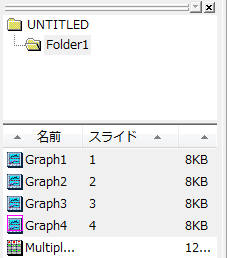
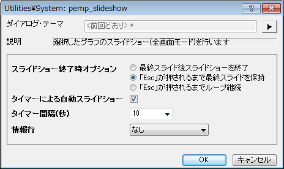

pemp_slideshow
メニュー情報
プロジェクトエクスプローラ内のグラフを複数選択してから右クリック: グラフのスライドショー
概要
Origin内での特定のグラフのスライドショー
追加の情報
必要なOriginのバージョン: 8.1 SR0以降
コマンドラインでの使用法
pemp_slideshow end:=hold timer:=1 period:=2;
変数
表示
名 |
変数
名 |
I/O
と
データ型 |
デフォルト
値 |
説明 |
| スライドショー終了時オプション |
end |
入力
int |
0 |
スライドショーが終了したあとの動作を指定します。
オプションリスト:
- quit:最終スライドの後、ショーを終了
- 全プレゼンテーションを実行後スライドショーを終了します。
- hold:Eｓｃキーが押されるまで最終スライドに留まる
- 全プレゼンテーションを実行後、最後のグラフを表示し、Escキーを押すと終了します。
- loop:Escキーが押されるまでループ継続
- Escキーを押すまで、スライドショーを繰り返します。
|
| タイマーによる自動スライドショー |
timer |
入力
int |
0 |
タイマーを使って次のグラフを自動で表示するか指定します。 |
| タイマー間隔(秒) |
period |
入力
double |
2 |
タイマーによる自動スライドショーにチェックを付けると利用可能です。各スライドの継続時間を秒単位で指定します。
|
| 情報行 |
info |
入力
int |
1 |
グラフのパスや名前など、表示されているグラフの情報を表示する位置を指定します。
オプションリスト:
- なし
- 情報を表示しません。
- スクリーンの上部
- スクリーンの上部に表示します。
- スクリーンの下部
- スクリーンの下部に表示します。
|
説明
このXファンクションは、選択した複数のグラフのスライドショーを開始するために使用します。各グラフを1つのスライドとして表示します。表示順は、グラフのスライドの順番(プロジェクトエクスプローラに表示されている順番)になります。
サンプル
このサンプルでは、選択した4つのグラフをフルスクリーンで表示します。
- 新しいプロジェクトを作成し、<Origin Program Directory>\Samples\Curve Fitting\Multiple
Gaussians.datをBook1にインポートします。
- 列Bを選択して作図> 基本の2Dグラフ: 折れ線と操作し、Graph1を作図します。
- 操作2を繰り返し、列C、D、EからGraph2、Graph3、Graph4を作成します。
- プロジェクトエクスプローラを開き、キーボードのCtrlキーを押しながらGraph1, Graph2,
Graph3, Graph4をクリックして、同時に4つのグラフを選択します。
- 
- コマンドウィンドウで、
pemp_slideshow -d; を実行し、ダイアログを開きます。
- ダイアログで、スライドショー終了時オプションの「Esc」キーが押されるまで最終スライドに留まるを選択します。タイマーによる自動スライドショーにチェックを付け、タイマー間隔(秒)を10に設定します。情報行ドロップダウンリストで、なしを選択します。
- 
- OKボタンをクリックすると、選択した4つのグラフが10秒ごとにフルスクリーンで表示されます。
関連 X ファンクション
pemp_pptslide